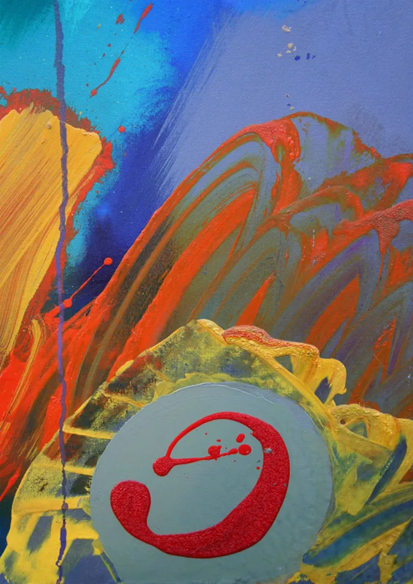

Wendy Vidler

Dw i wedi cael fy ysbrydoli gandirwedd byd natura a phobi Ynys Mon
Dw i’n mwynhau gweithio a phob mathau o gyfryngau. Ar hyn o bryd, mae i’n well gen i weithio â dyfrilliw, pastel ac inc.
Taking inspiration from the Anglesey Landscape, Wildlife and People around me.
I enjoy working with all types of media, currently favouring watercolour, pastel and ink.
07747 167711
wendy@wendyvidlerart.com
www.wendyvidlerart.com
NEUADD, CEMLYN, ANGLESEY, LL67 0EA
O Fali gadewch yr A5025 wrth arwydd y ffatri Jam ac ewch ymlaen nes i chi gyrraedd dau dŷ gwyn ar y chwith, ewch ymlaen rhyw faint a throwch i’r chwith i fyny lon fach ar y dde. Dw i ar dop y lon.
From Valley direction leave A5025 at the Jam Factory sign and continue past them until you reach two white houses on the left, go a little further and turn left up a small lane on the right. I am at the top of the lane.